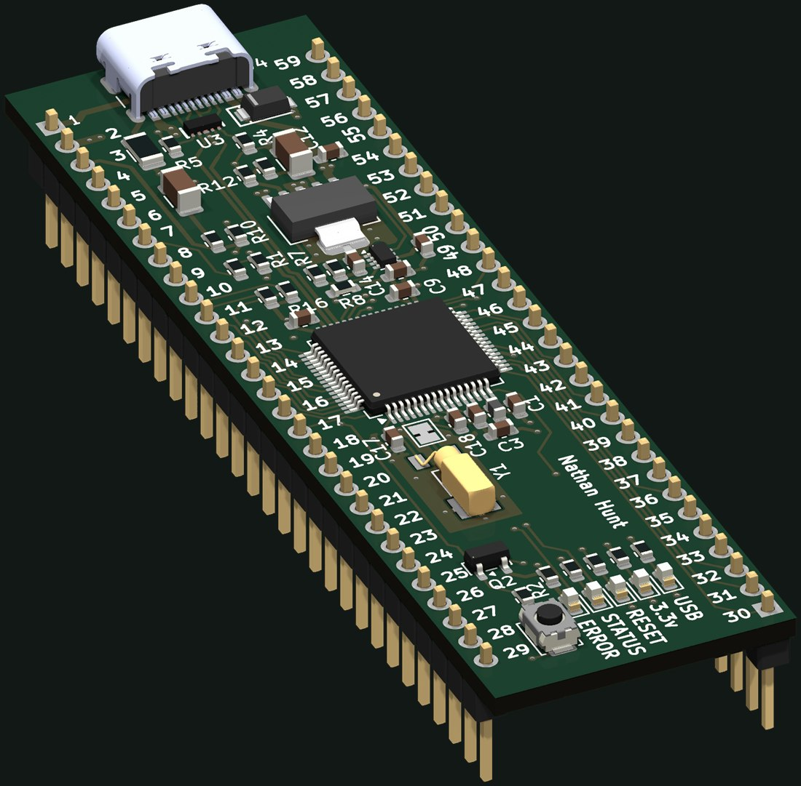
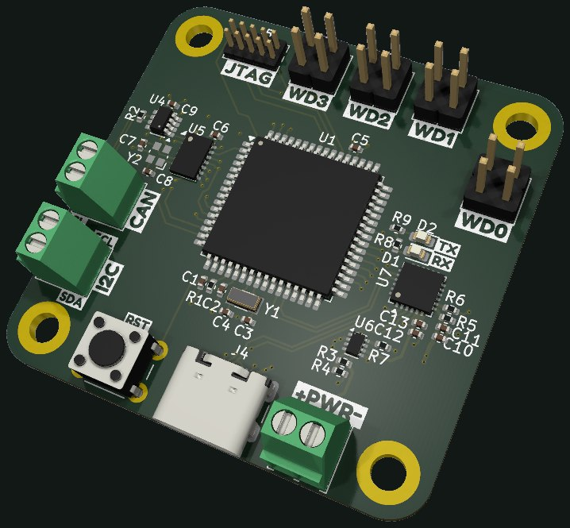
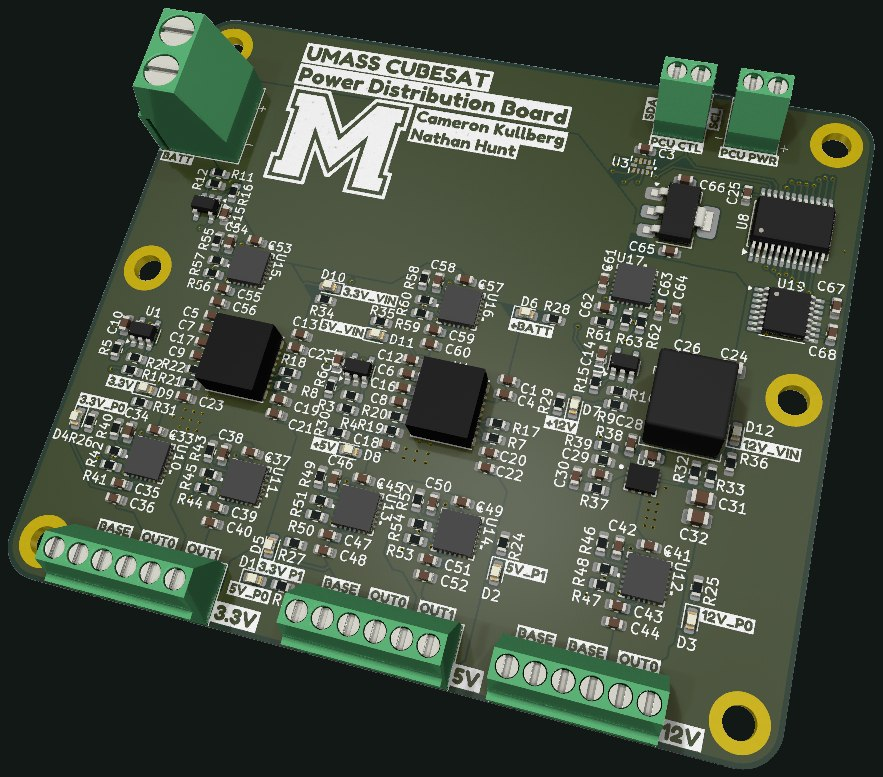
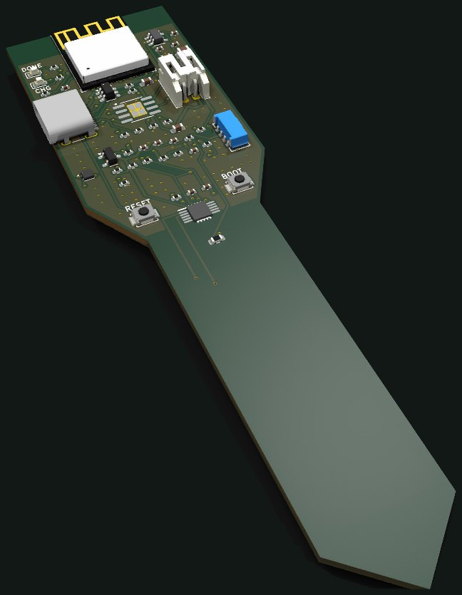
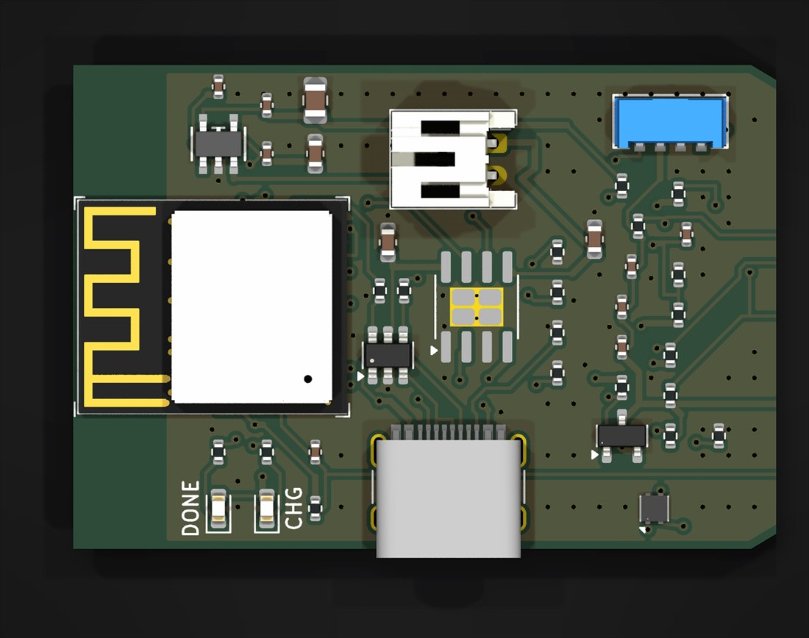
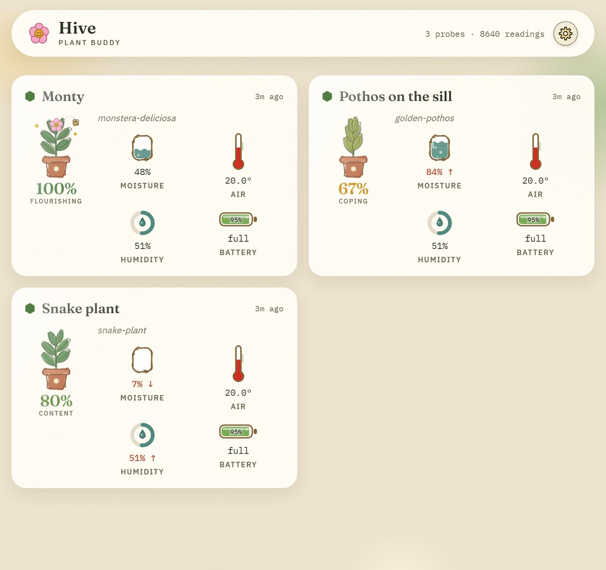
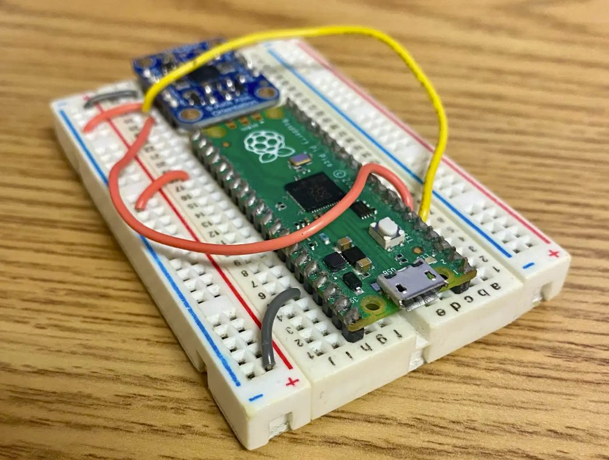

Computer engineering student at UMass Amherst working on embedded systems, low-level software,
and hardware integration. I'm looking for full-time roles after I graduate in May 2027.
Designing and building power and control electronics for a student-led CubeSat mission.
PCB DesignKiCad / SAMD21

SAMD21RT dev board, rendered from the KiCad design.
SAMD21RT Dev Board
Designed a 4-layer, 23 × 80 mm development board in KiCad as practice in compact PCB design and so the
team's programmer could start writing firmware before the Main Computer is built. The Main Computer will
use the radiation-tolerant SAMD21RT to control the PDU rails, monitor for radiation faults, handle
redundancy such as shutting off gates or power cycling, manage system backup, and reflash other
subsystems. This board runs the ATSAMD21J17D, a same-pinout commercial stand-in, and fits a standard
breadboard. USB-C feeds a 3.3 V LDO, a TPS2117 mux selects between USB and an external 3.3 V supply, and
a 32.768 kHz crystal gives the RTC a more accurate clock than the internal oscillator. The first boards
are being fabricated.
45 of 52 GPIO on 0.1 in headers, including 20 ADC channels, six I²C buses, and SWD
USB-C connector protected by TVS and ESD clamps
External 3.3 V input damped against hot-plug ringing, simulated at no more than 5.69 V against a 6 V
limit
Every resistor, capacitor, and inductor sized in a written design doc citing datasheet section and
page
Embedded SystemsATmega128A

PCU development board prototype.
Power Control Unit Dev Board
Co-designed the Power Control Unit development board and co-wrote its custom drivers. It was the first
version of the Main Computer: based on the ATmega128A, it was designed to control the PDU, monitoring for
faults and reacting to them. Adding system backup and reflashing of corrupt images later led to a Main Computer
redesign around the more capable SAMD21RT.
Custom firmware drivers for power management and telemetry
Prototype validation platform for unified BMU/PDU development
Power ElectronicsPCB Design

PDU test board for load switching validation.
Power Distribution Unit
Co-designed the Power Distribution Unit that routes regulated power from the BMU to each satellite
subsystem. The PDU provides individually switched and current-limited output channels, allowing
the Main Computer to enable or disable subsystems on demand and isolate faults before they
propagate to the main bus. The board provides 3.3 V, 5 V, and 12 V rails.
Independent load switches with overcurrent protection per channel
Software-controllable subsystem power enable/disable
Bus voltage monitoring and latch-up recovery logic
A collection of projects I've built to sharpen my skills.
Plant-Buddy
A BLE soil-sensor probe and Raspberry Pi hub that keeps houseplants alive. Built end to end as
the sole developer: PCB, firmware, hub software, and security.
PCB DesignKiCad / ESP32-C3

BumbleBee V1 probe, rendered from the KiCad design.
BumbleBee Sensor Probe
Designed a 4-layer, 30 × 110 mm ESP32-C3 sensor probe in KiCad with 48 SMD parts: FDC1004 capacitive
moisture sensing, SHT40 temperature and humidity, VEML7700 light, an NTC for soil temperature, EC
electrodes, and a BQ25302 LiPo charger. DRC, ERC, and schematic-parity clean, with the BOM sourced for
JLCPCB assembly. Five boards were fabricated and brought up.
Five sensors, USB-C charging, and a nanopower LDO on a stake-shaped board
Bring-up caught a soldermask omission over the EC electrodes and three broken nets that only a
schematic-parity DRC reveals; both checks are now in the pre-order checklist
Fabricated and assembled by JLCPCB from a generated BOM and placement file
Embedded FirmwareESP-IDF / C

The sensor head: ESP32-C3 module, USB-C charging, and the I²C sensor cluster.
Probe Firmware
Wrote the ESP-IDF C firmware that runs the probe: I²C sensor drivers, a packed NimBLE advertisement
payload, and a deep-sleep duty cycle measured at ~5.4 µA against an 11.6 µA budget. The probe wakes on a
timer, powers its sensor rail, reads, broadcasts, and sleeps. It does no interpretation of its own; all
calibration and unit conversion happen on the hub.
I²C drivers for the FDC1004, SHT40, and VEML7700
~5.4 µA deep-sleep current against an 11.6 µA budget
Host-side unit tests on golden vectors shared with the hub
Python / FastAPIRaspberry Pi CM5

The Hive dashboard, running against simulated probes.
Hive Hub & Dashboard
Built the Hive hub in Python on a Raspberry Pi CM5: a BLE collector into SQLite, a calibration
pipeline (VPD, lux to PPFD to DLI, NTC Beta), a FastAPI API, and a PWA dashboard with Web Push watering
and feeding alerts. Deployed as systemd services with a self-verifying update and rollback script, and
backed by a written threat model, hardening plan, and offboarding runbook.
Daily rollups and a health-tracker chart over 24 hours, 30 days, or a year
36-species plant catalogue driving watering targets and seasonal feeding schedules
Remote use over Tailscale with QR-code device pairing, revocable per-device sessions, and a
DNS-rebinding guard
Hash-locked dependencies audited by pip-audit, osv-scanner, and gitleaks inside a suite of 982 Python
and 262 JavaScript tests
Other Projects
Embedded SystemsC++ / CMake

Weekend driver build.
BNO055 IMU Driver
Designed a complete BNO055 driver that configures I²C, unit selection, operation modes, axis remap/sign,
and quaternion/Euler/vector reads. Packaged with CMake for the Pico SDK and tuned USB stdio logging to
keep iteration fast.
Axis remap + calibration helpers
Power/operation mode toggles
Quaternions, Euler, and vector outputs
Systems ProgrammingC
Clean command-line writing experience.
Terminal Text Editor
A minimalist text editor that reads raw keystrokes, maintains a live on-screen buffer, and uses a
linked-list core for near-instant cursor inserts and deletes. Built with robust boundary checks and a
clean, extensible header/API. Microbenchmarked at ~0.05 µs per insert and ~0.02 µs per backspace
(100k–500k operations, excluding rendering).